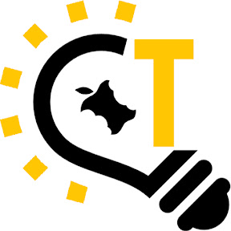

Lapins
Lutter contre les RDVs non honorés dans les Maisons de Solidarités du Département en simplifiant la prise de rendez-vous..
Découvrir
Logements
Faciliter et simplifier l’accès au logement dans le
Pas-de-Calais par la dématérialisation et le partage des dossiers entre les différents acteurs.
Découvrir

Trognon 62
Fédérer une communauté d’agents autour de la
question du développement durable et de l’économie circulaire grâce à des composteurs.
Découvrir
Coopérative de matériels
Créer un groupement d’achat, d’échange, de prêt de
matériel technique pour les services du Département.
Découvrir
Stages de 3e
Faciliter l’accès aux stages de découverte de troi-
sième pour les 400 collégiens qui en sont dépourvus chaque année.
Découvrir
Indien
Une solution pour rendre les GPS intelligents un
peu plus intelligents.
Découvrir
Autour de moi
Rendre l’information des services publics sur les
territoires plus accessibles en agrégeant toutes les
informations disponibles sur les services rendus aux
usagers.
Découvrir